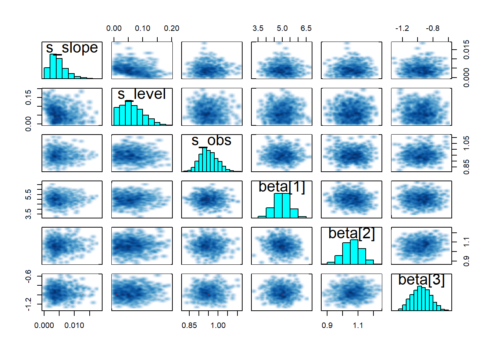

Bayesian Structural Time Series
This post is inspired by these two posts, Fitting Bayesian structural time series with the bsts R package and a subsequent post on the Stan help page here.
library('rstan')
rstan_options(auto_write = TRUE)
options(mc.cores = parallel::detectCores())
library(dplyr)Data Generating Process
Regression State \[y_t = \mu_t + \beta^Tx_t + \epsilon_t\]
Trend State
\[\mu_{t+1}=\mu_t+\delta_t+\eta_{0t}\]
set.seed(336)
x1 <- rnorm(250,1,0.1)
x2 <- rnorm(250, 0, 1)
x3 <- rnorm(250, 1, .5)
preds <- data.frame(x1 = x1, x2 = x2, x3 = x3)
v <- rep(-0.0001,250)
u <- rep(0.0,250)
s_slope <- rnorm(250,0,0.005)
s_level <- rnorm(250,0,0.005)
for (i in 2:250){
u[i] <- u[i-1] + v[i-1] + s_level[i-1]
v[i] <- v[i-1] + s_slope[i-1]
}
s_obs <- rnorm(250,0,1)
x <- runif(250,0,1)
y <- u + 5*x1 + 1*x2 + -.75*x3+ s_obs
n <- 250
x <- as.matrix(preds)
k <- ncol(preds)
ytrain <- y[1:n]
xtrain <- x[1:n,]
plot(y)
Stan
Develop the Stan model
writeLines(readLines("stan_bsts.stan"))// From https://discourse.mc-stan.org/t/bayesian-structural-time-series-modeling/2256
data {
int <lower=0> t; // number of observations
int <lower=1> K; // number of predictors
matrix[t, K] x; // predictors
vector[t] y; // outcomes
}
parameters {
vector[t] u_err; //Slope innovation
vector[t] v_err; //Level innovation
vector[K] beta;
real <lower=0> s_obs;
real <lower=0> s_slope;
real <lower=0> s_level;
}
transformed parameters {
vector[t] u; //Level
vector[t] v; //Slope
u[1] = u_err[1];
v[1] = v_err[1];
for (i in 2:t) {
u[i] = u[i-1] + v[i-1] + s_level * u_err[i];
v[i] = v[i-1] + s_slope * v_err[i];
}
}
model {
u_err ~ normal(0,1);
v_err ~ normal(0,1);
y ~ normal (x*beta + u, s_obs); //u
}stan_dat = list( t = length(ytrain),
y = ytrain,
x = xtrain,
K = k)Compile the Stan model.
model_bsts <- stan_model("stan_bsts.stan")The run the model with our data.
#Load stan model file, and fit to data
fit <- sampling(model_bsts , stan_dat,
iter=1000,
chains=3,
control = list(max_treedepth = 15,
adapt_delta = .95), refresh =0)## Warning: There were 23 divergent transitions after warmup. Increasing adapt_delta above 0.95 may help. See
## http://mc-stan.org/misc/warnings.html#divergent-transitions-after-warmup## Warning: Examine the pairs() plot to diagnose sampling problemsModel Checking
And as always special thanks to Michael Betancourt for these amazing tools for diagnostics.
util <- new.env()
source('stan_utilities.R', local=util)util$check_all_diagnostics(fit)Do pairs plot of different parameters
pairs(fit,pars = c("s_slope","s_level","s_obs","beta"))
traceplot(fit, pars = "beta")
Inference
print(fit, pars = "beta")## Inference for Stan model: stan_bsts.
## 3 chains, each with iter=1000; warmup=500; thin=1;
## post-warmup draws per chain=500, total post-warmup draws=1500.
##
## mean se_mean sd 2.5% 25% 50% 75% 98% n_eff Rhat
## beta[1] 4.98 0.01 0.51 3.96 4.7 4.98 5.32 5.98 1280 1
## beta[2] 1.06 0.00 0.06 0.95 1.0 1.06 1.10 1.17 1997 1
## beta[3] -0.96 0.00 0.13 -1.20 -1.0 -0.96 -0.88 -0.72 1775 1
##
## Samples were drawn using NUTS(diag_e) at Thu Jun 20 10:20:22 2019.
## For each parameter, n_eff is a crude measure of effective sample size,
## and Rhat is the potential scale reduction factor on split chains (at
## convergence, Rhat=1).Add Seasonality?
Data Generating Process
Regression State \[y_t = \mu_t + \tau_t + \beta^Tx_t + \epsilon_t\]
Trend State
\[\mu_{t+1}=\mu_t+\delta_t+\eta_{0t}\]
Seasonal Pattern
\[\tau_{t+1}=-\Sigma_{s=1}^{s-1}\tau_t+\eta_{2t}\]
Generate Fake Data
set.seed(336)
x1 <- rnorm(250,1,0.1)
x2 <- rnorm(250, 1, .1)
x3 <- rnorm(250, 1, .5)
preds <- data.frame(x1 = x1, x2 = x2, x3 = x3)
v <- rep(-0.0001,250)
u <- rep(0.0,250)
s_slope <- rnorm(250,0,0.005)
s_level <- rnorm(250,0,0.005)
for (i in 2:250){
u[i] <- u[i-1] + v[i-1] + s_level[i-1]
v[i] <- v[i-1] + s_slope[i-1]
}
# Seasonal Component with freq = 12
t <- seq(0,1, by = 1/250)
tau <-vector()
tau<- 1*sin(12*pi*t*2)
plot(tau)s_obs <- rnorm(250,0,1)
x <- runif(250,0,1)
y <- u + 5*x1 + 1*x2 + -.75*x3+ s_obs + tau[-251]
n <- 250
x <- as.matrix(preds)
k <- ncol(preds)
ytrain <- y[1:n]
xtrain <- x[1:n,]
plot(y)
Stan Model
writeLines(readLines("stan_bsts_seasonal.stan"))// From https://discourse.mc-stan.org/t/bayesian-structural-time-series-modeling/2256
data {
int <lower=0> t; // number of observations
int <lower=1> K; // number of predictors
matrix[t, K] x; // predictors
vector[t] y; // outcomes
int <lower=1> frequency; // seasonality
}
parameters {
vector[t] u_err; //Slope innovation
vector[t] v_err; //Level innovation
vector[t] seasonal; // seasonality
vector[K] beta;
real <lower=0> s_obs;
real <lower=0> s_slope;
real <lower=0> s_level;
real <lower=0> s_season;
}
transformed parameters {
vector[t] u; //Level
vector[t] v; //Slope
u[1] = u_err[1];
v[1] = v_err[1];
for (i in 2:t) {
u[i] = u[i-1] + v[i-1] + s_level * u_err[i];
v[i] = v[i-1] + s_slope * v_err[i];
}
}
model {
u_err ~ normal(0,1);
v_err ~ normal(0,1);
// Seasonal Component
for (i in frequency:t) {
seasonal[i] ~ normal(- sum(seasonal[i-(frequency-1):i-1]), s_season);
}
y ~ normal (x*beta + u + seasonal, s_obs); // model
}Now let’s compule the model:
model_season <- stan_model("stan_bsts_seasonal.stan")Prepare the data for Stan.
stan_dat_seasonal = list( t = length(ytrain),
y = ytrain,
x = xtrain,
K = k,
frequency = 12)Then fit the model.
fit <-sampling(model_season, stan_dat_seasonal,
iter = 1000, cores = 2, chain = 2,
control = list(max_treedepth = 15, adapt_delta = .99),
refresh = 0)## Warning: There were 2 divergent transitions after warmup. Increasing adapt_delta above 0.99 may help. See
## http://mc-stan.org/misc/warnings.html#divergent-transitions-after-warmup## Warning: There were 2 chains where the estimated Bayesian Fraction of Missing Information was low. See
## http://mc-stan.org/misc/warnings.html#bfmi-low## Warning: Examine the pairs() plot to diagnose sampling problemsutil$check_all_diagnostics(fit)print(fit, "beta")## Inference for Stan model: stan_bsts_seasonal.
## 2 chains, each with iter=1000; warmup=500; thin=1;
## post-warmup draws per chain=500, total post-warmup draws=1000.
##
## mean se_mean sd 2.5% 25% 50% 75% 98% n_eff Rhat
## beta[1] 5.2 0.03 0.62 3.96 4.7 5.2 5.60 6.44 603 1
## beta[2] 1.7 0.02 0.55 0.67 1.4 1.7 2.10 2.83 697 1
## beta[3] -1.0 0.01 0.15 -1.30 -1.1 -1.0 -0.92 -0.73 611 1
##
## Samples were drawn using NUTS(diag_e) at Thu Jun 20 10:31:36 2019.
## For each parameter, n_eff is a crude measure of effective sample size,
## and Rhat is the potential scale reduction factor on split chains (at
## convergence, Rhat=1).pairs(fit, pars = c("beta", "s_obs", "s_season"))
Research and Methods Resources
me.dewitt.jr@gmail.com
Winston- Salem, NC
Copyright © 2018 Michael DeWitt. All rights reserved.